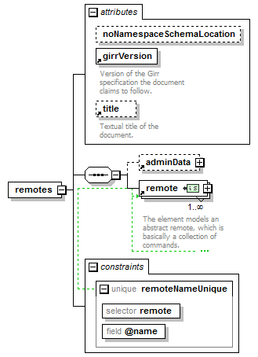

| diagram |  | ||||||||||||||||||||||||||||
| properties |
|
||||||||||||||||||||||||||||
| children | adminData remote | ||||||||||||||||||||||||||||
| attributes |
|
||||||||||||||||||||||||||||
| identity constraints |
|
||||||||||||||||||||||||||||
| source | <xs:element name="remotes"> <xs:complexType> <xs:annotation> <xs:documentation>This element models a set of remotes. It may act as a data base for a program or device. </xs:documentation> </xs:annotation> <xs:sequence> <xs:element ref="adminData" minOccurs="0"/> <xs:element ref="remote" maxOccurs="unbounded"/> </xs:sequence> <xs:attribute name="noNamespaceSchemaLocation" type="xs:anySimpleType" use="optional"/> <xs:attribute ref="girrVersion" use="required"/> <xs:attribute ref="title" use="optional"/> </xs:complexType> <xs:unique name="remoteNameUnique"> <xs:selector xpath="remote"/> <xs:field xpath="@name"/> </xs:unique> </xs:element> |
| type | xs:anySimpleType | ||||
| properties |
|
||||
| source | <xs:attribute name="noNamespaceSchemaLocation" type="xs:anySimpleType" use="optional"/> |